★★★★★
"Gracias a Paradero Huanca encontré mi primer cliente. La plataforma es increíble y muy fácil de usar."
Explora los mejores proyectos creados por estudiantes de Programación y Tecnología de la Información.
Estudiantes
Proyectos
Gratis
Descubre los mejores proyectos publicados por nuestros estudiantes.
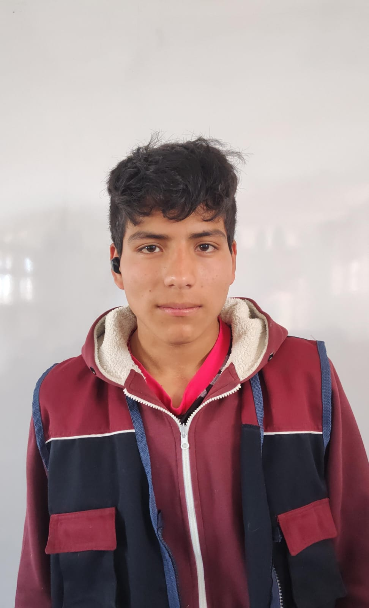
Arreglos Florales
Sitio web moderno para una florería dedicado a la venta de arreglos florales personalizados para cumpleaños, aniversarios, bodas y ocasiones especiales.
Ver ProyectoPower Gym Fitness
Plataforma web para un gimnasio donde los usuarios pueden conocer los servicios, entrenadores, horarios y planes de entrenamiento personalizados.
Ver ProyectoFisio Milagros
Página web para un centro de terapia física donde los pacientes pueden conocer tratamientos, especialistas y solicitar citas en línea.
Ver ProyectoTours Viajes Empresa
Portal web para una empresa turística que ofrece paquetes nacionales, reservas, promociones y atención personalizada para viajeros.
Ver ProyectoJEH Computer Solutions
Sitio web profesional para una empresa especializada en reparación, mantenimiento de computadoras, instalación de software y soporte técnico.
Ver Proyecto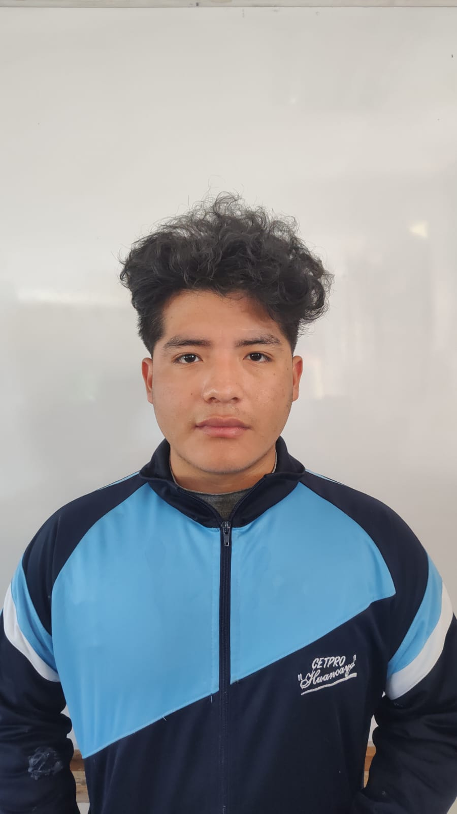
Cafetería Aroma & Café
Plataforma web para una cafetería donde los clientes pueden conocer el menú, promociones, realizar pedidos y descubrir un ambiente acogedor.
Ver Proyecto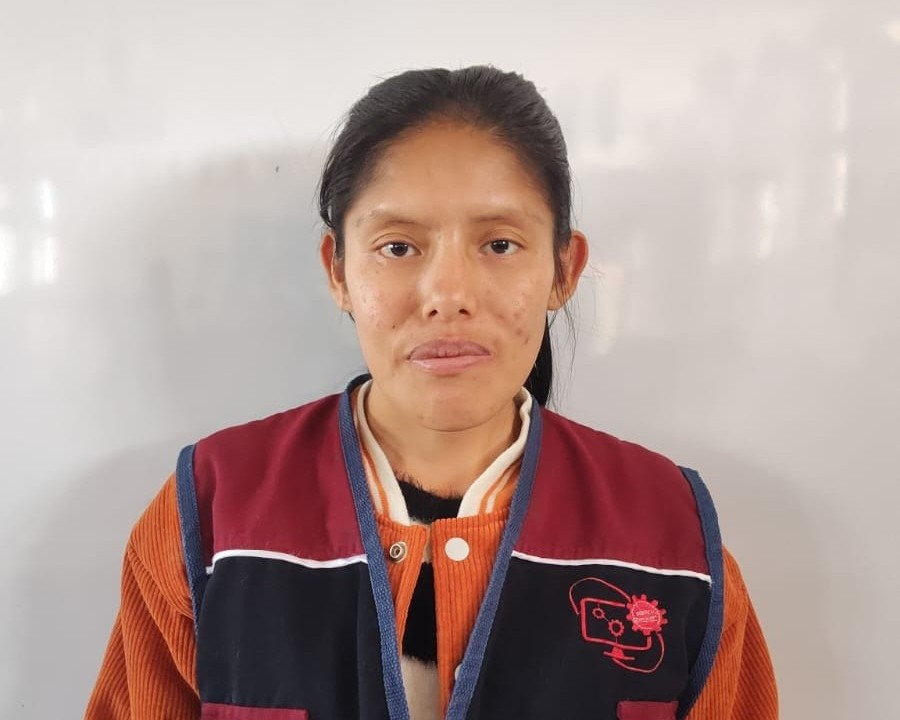
Trabajos Manuales
Sitio web para exhibir y comercializar trabajos artesanales, decoraciones hechas a mano y productos personalizados.
Ver Proyecto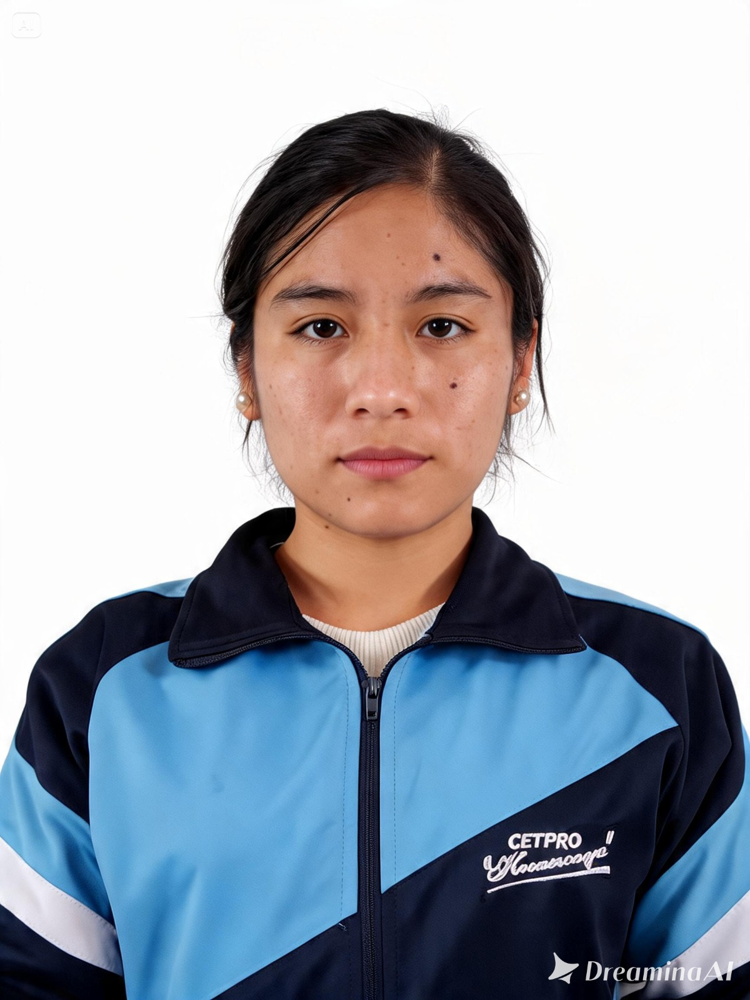
Tech Solutions
Página web corporativa para una empresa dedicada al desarrollo de soluciones tecnológicas, soporte técnico y consultoría informática.
Ver ProyectoSueños de Azúcar
Plataforma para una pastelería especializada en tortas, cupcakes, postres personalizados y pedidos para eventos especiales.
Ver ProyectoJuguería Fresh Fruit
Sitio web para una juguería con menú de bebidas naturales, promociones, pedidos en línea y recomendaciones de alimentación saludable.
Ver Proyecto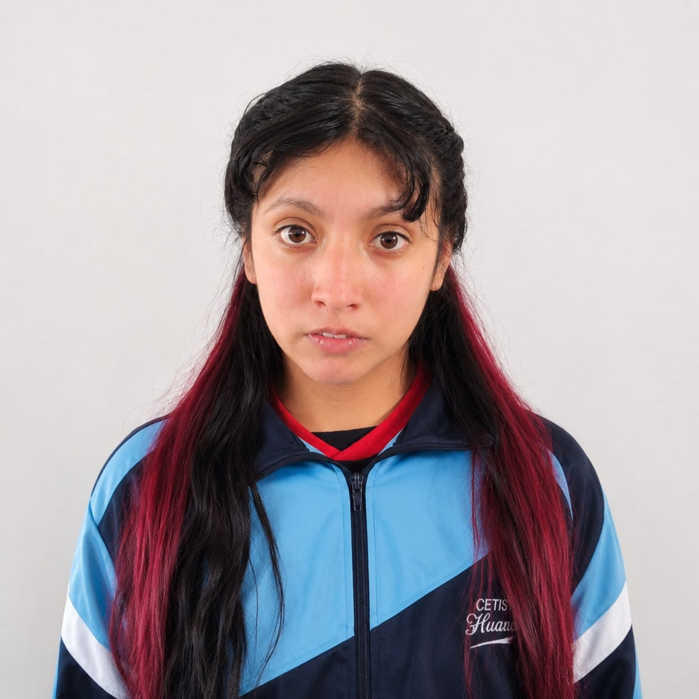
Creación de Dibujos
Plataforma para exhibir ilustraciones digitales, retratos personalizados y trabajos artísticos realizados por encargo para clientes y empresas.
Ver Proyectos
Bodegas Online
Sitio web diseñado para una bodega que permite mostrar productos, promociones y facilitar la atención de pedidos de los clientes.
Ver Proyecto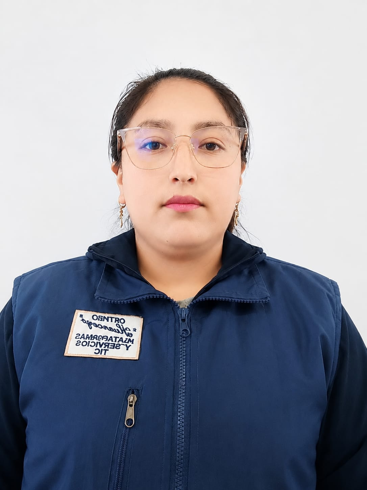
Página Web para Comerciantes
Landing page profesional orientada a pequeños comerciantes para promocionar sus negocios, productos y aumentar sus ventas en línea.
Ver Proyecto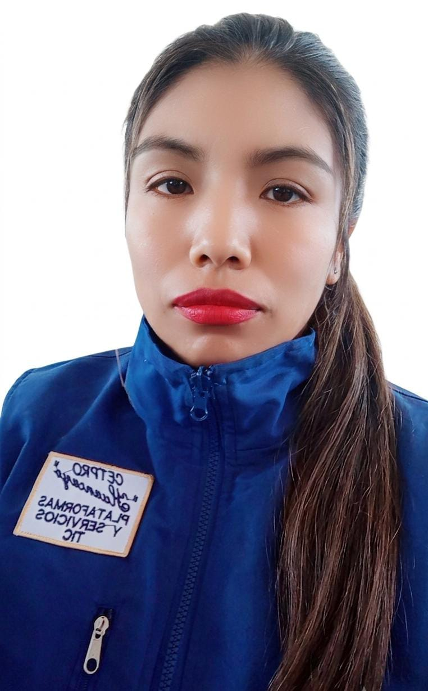
Naceki Rent Cars
Plataforma web para una empresa dedicada al alquiler de camionetas, reservas en línea y atención para turismo y transporte empresarial.
Ver ProyectoLanding Page para Salones de Belleza
Diseño de una landing page moderna enfocada en salones de belleza, mostrando servicios, promociones y reservas mediante WhatsApp.
Ver Proyecto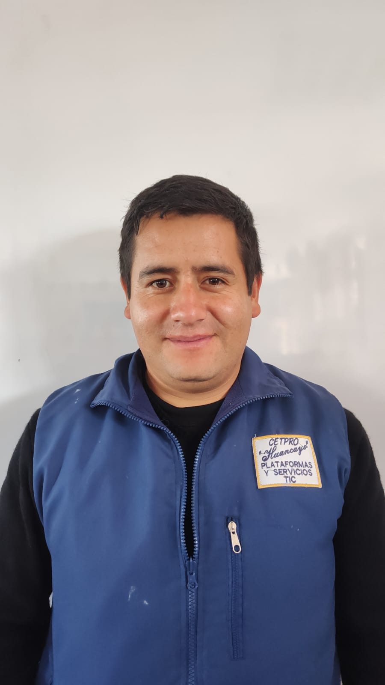
Página Web para Maestro de Ceremonias
Sitio web profesional para promocionar los servicios de un maestro de ceremonias, mostrando experiencia, eventos realizados, galería y formulario de contacto para reservas.
Ver ProyectoTrabajos Metálicos en General
Landing page para una empresa especializada en estructuras metálicas, soldadura, fabricación e instalación de proyectos para hogares y empresas.
Ver ProyectoEstudio Jurídico
Plataforma institucional para un estudio jurídico con información sobre asesoría legal, especialidades, equipo profesional y solicitud de consultas en línea.
Ver Proyecto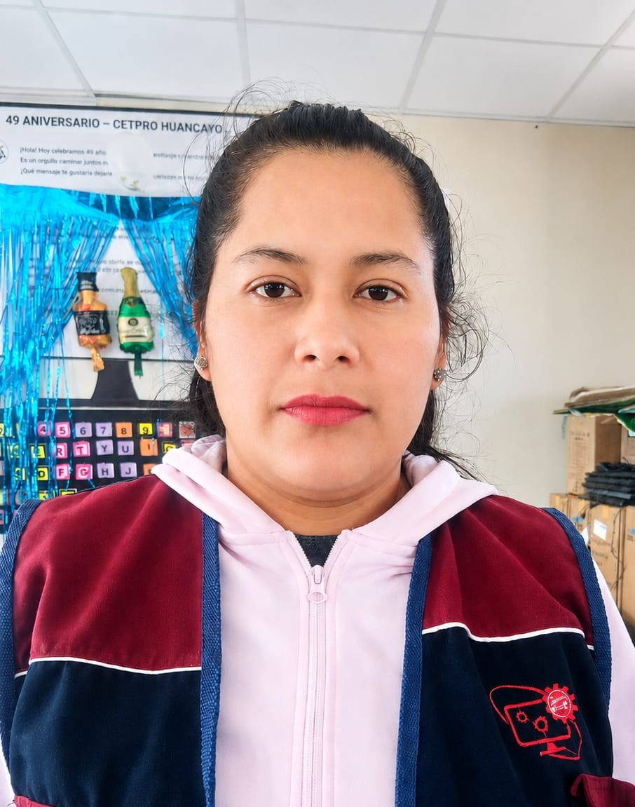
Página Web para una Artista
Sitio web diseñado para presentar el portafolio artístico, biografía, galería de obras, próximos eventos y medios de contacto de una artista.
Ver ProyectoSitios Web para Salones de Belleza
Desarrollo de sitios web modernos para salones de belleza, permitiendo mostrar servicios, promociones, galerías y reservas mediante WhatsApp.
Ver Proyecto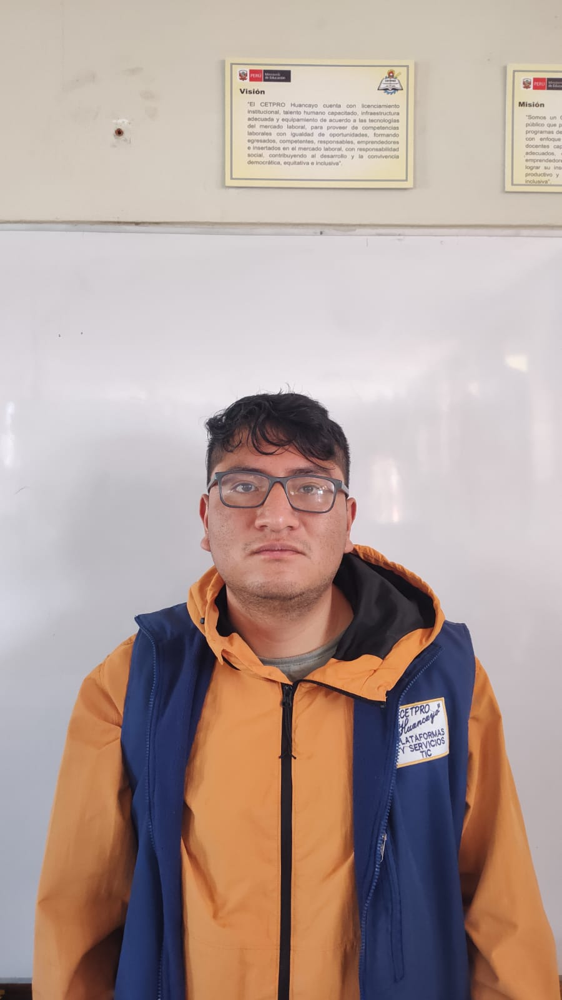
Lavado de Autos CarWash
Plataforma web para un centro de lavado de vehículos donde los clientes pueden conocer los servicios, promociones, precios y reservar citas para el mantenimiento de sus automóviles.
Ver ProyectoRestaurante La Terraza
Sitio web moderno para un restaurante que permite visualizar el menú, especialidades, promociones, ubicación y realizar reservas para brindar una mejor experiencia a sus clientes.
Ver ProyectoBarbería Elegance
Página web profesional para una barbería donde los clientes pueden conocer los servicios, estilos de corte, promociones y reservar citas desde cualquier dispositivo.
Ver Proyecto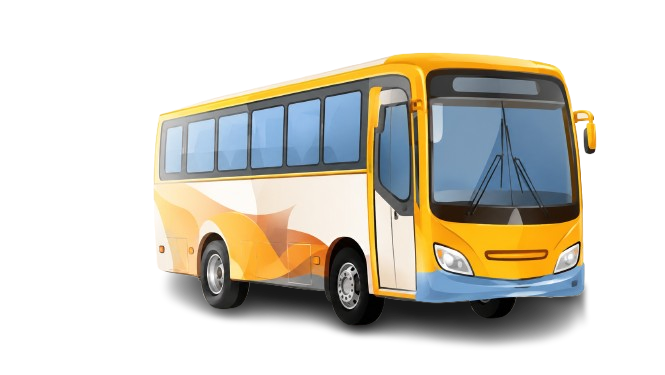
Comparte tu talento con toda la comunidad de Paradero Huanca.
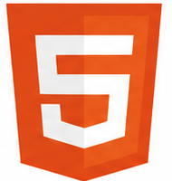
HTML5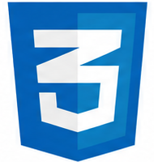
CSS3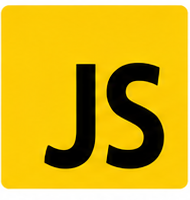
JavaScript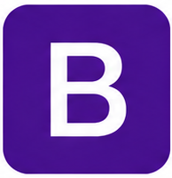
Bootstrap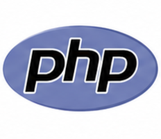
PHP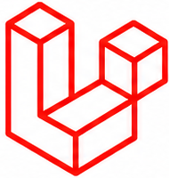
Laravel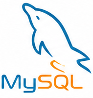
MySQL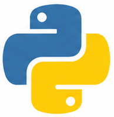
Python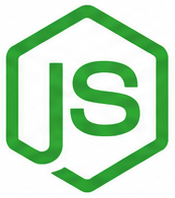
Node.js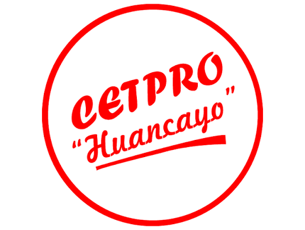
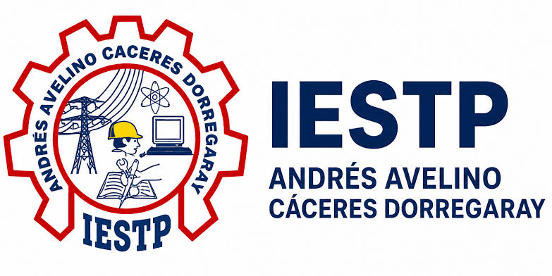
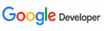
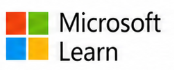
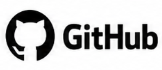
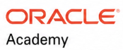
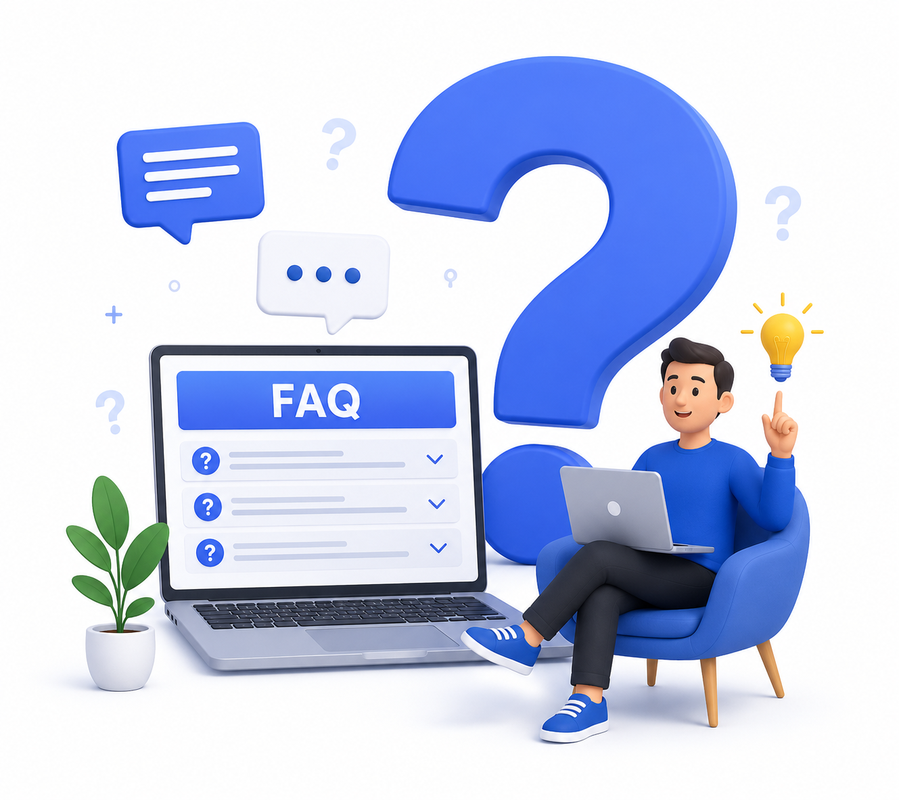
Visítanos en Huancayo, Perú.
Somos una comunidad que impulsa el talento estudiantil.